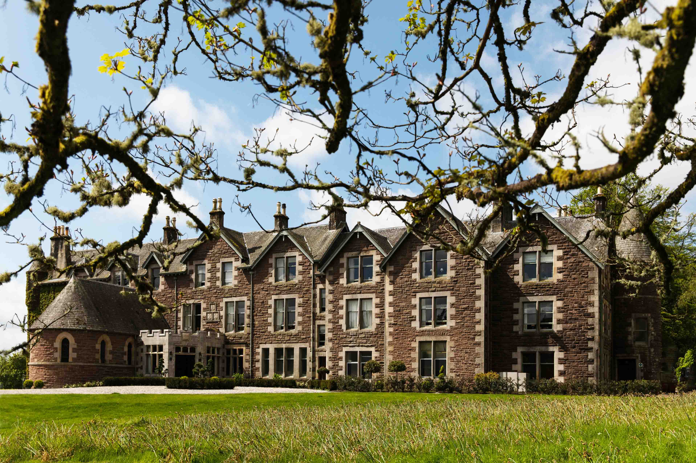

Cromlix Hotel
Major CMS upgrade
Upgraded Cromlix from an end of support Umbraco instance to an up to date one.
My career has involved upgrading and maintaining websites, developing clinical decision support systems, and creating custom applications to improve business efficiency. With a background in Computing Science, I thrive in problem-solving and delivering high-quality software solutions.

Upgraded Cromlix from an end of support Umbraco instance to an up to date one.
Upgraded Rockliffe Hall from an end of support Umbraco instance to an up to date one. This included upgrading their SPA to be compatible with the now .Net Core framework.
Contributed to the development of "Quris Clinical Companion," a decision support system used by clinicians within the NHS, built on Umbraco 10.
Maintained and upgraded "CaskTEK," an application used to monitor cask filling, disgorging, and reporting"CaskTEK," an application used to monitor cask filling, disgorging, and reporting
Experienced in full-stack development, web application upgrades, and automation solutions using modern technologies.
Proficient in C#, JavaScript, PHP, SQL, Java, PowerShell, and Visual Basic.
Skilled in SQL Server, database administration, and optimizing queries for efficient data handling.
Umbraco Certified Expert with experience upgrading and maintaining Umbraco sites from version 7 to 13.
Developed automated business processes using Power Automate, Power Apps, and SharePoint.
Worked with Azure DevOps for CI/CD pipelines, source control, and cloud-based development.
Experience leading projects, conducting code reviews, and working in cross-functional teams to deliver high-quality solutions.